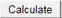

このチュートリアルでは、算術演算（足し算、引き算、掛け算、割り算）を実行する計算機を構築します。
ここでは、以下の項目を解説します。
これにより、以下の画像のような計算機になります。
必要なOriginのバージョン: Origin 2017 以降
| Note: こちらから、サンプルファイルをダウンロードできます。 |
この計算機を作には、まず初めに、HTMLページを作成して、算術式表示ボックス、数字入力ボタン、オペレーターボタン、計算ボタン、消去ボタンをこのページに追加します。
<!DOCTYPE html> <html> <head> <meta charset="utf-8" /> <meta http-equiv="X-UA-Compatible" content="IE=Edge"/> </head> <body> <!--equation display textbox--> <div id="Equation" style="border:solid;height:20px;"></div> </br> <!--four arithmetic operations buttons--> <div id="Ops"> <input type="button" id="btnPlus" value="+"/> <input type="button" id="btnMinus" value="-"/> <input type="button" id="btnMultiply" value="X"/> <input type="button" id="btnDiv" value="/"/> </div> </br> <!--number input buttons from 0 to 9--> <div id="Num789"> <input type="button" id="btn7" value="7"/> <input type="button" id="btn8" value="8"/> <input type="button" id="btn9" value="9"/> </div> <div id="Num456"> <input type="button" id="btn4" value="4"/> <input type="button" id="btn5" value="5"/> <input type="button" id="btn6" value="6"/> </div> <div id="Num123"> <input type="button" id="btn1" value="1"/> <input type="button" id="btn2" value="2"/> <input type="button" id="btn3" value="3"/> </div> <div id="Num0"> <input type="button" id="btn0" value="0"/> </div> </br> <!--calculation button and clear button --> <div> <input type="button" id="btnCalculate" value="Calculate"/> <input type="button" id="btnClear" value="Clear"/> </div> </body> </html>
| Note:編集を終えたら、ブラウザでこのページを開いて、確認します。 |
以下のように計算機は動作します。
この方法でプログラムを実行するには、onclickイベントハンドラーを追加して、HTMLページのボタンをマウスでクリックすることを追跡する必要があります。この操作により、計算を実行する際に使うJavaScriptが呼び出されます。
計算ボタンを使う:
Invoke_Cal()を加えます。ここで、この関数を使って、手順2に記載してあるonclickイベントハンドラで、ボタンのクリックに応答するようにします。
<script> function Invoke_Cal() {} </script>
Invoke_Cal()が起動されます。
<input type="button" id="btnCalculate" value="Calculate" onclick="Invoke_Cal()"/>
onclickイベントハンドラをボタンすべてに加えてクリック操作を追跡して、<script>内のの対応するJavaScript関数に追加することができます。
このサンプルでは、OriginCで算術演算を実行してみることにより、JavaScriptのOriginCを呼び出す方法を説明します。
JavaScriptで関数window.external.ExtCallを使って、OriginCを使います。
window.external.ExtCall(“OriginC Function Name”, Parameter1, Parameter2…)
Note:
|
JavaScriptのOriginCを呼び出す方法を理解した後、以下のように<script>内の関数を変更することができ、HTMLサンプルファイルでコンプリートコードを利用できます。
<script> var PlusOp = "+"; var MinusOp = "-"; var MultiplyOp = "*"; var DivOp = "/"; function Invoke_AddOp(strOp) { var OriginStr = document.getElementById('Equation').innerHTML; //OriginC関数AddOpを呼び出してテキストボックスにオペレータシンボルを表示 var NewStr = window.external.ExtCall("AddOp", OriginStr, strOp); document.getElementById('Equation').innerHTML = NewStr; } function Invoke_AddNum(NewNum) { var OriginStr = document.getElementById('Equation').innerHTML; //OriginC関数AddNumでテキストボックスに入力文字を表示 var NewStr = window.external.ExtCall("AddNum", OriginStr, NewNum); document.getElementById('Equation').innerHTML = NewStr; } function Invoke_Cal() { var Str = document.getElementById('Equation').innerHTML; //OriginC関数Calculateを呼び出して算術結果を取得 var Result = window.external.ExtCall("Calculate", Str); document.getElementById('Equation').innerHTML = Result; } function Invoke_Clear() { //OriginC関数Clearを呼び出してテキストボックスのテキストを消去 document.getElementById('Equation').innerHTML = window.external.ExtCall("Clear"); } </script>
このセクションでは、OriginCのコードを編集して実行し、Originに計算機ダイアログを作成します。
#include <Origin.h> #include <..\OriginLab\DialogEx.h> #include <..\OriginLab\HTMLDlg.h>
HTMLDlg
class OriginCalculatorDlg: public HTMLDlg { public: string GetInitURL() { return GetFilePath(__FILE__) + "SimpleCalc.html"; } string GetDialogTitle() { return "Simple Calculator"; } };
calc を追加します。
void calc() { OriginCalculatorDlg dlg; dlg.DoModalEx(GetWindow()); }
calc() 関数を実行してダイアログを開きます。
このセクションでは、JavaScriptで呼び出すダイアログクラスOriginCalculatorDlgを追加して基本的な算術演算を実行します。
public:
DECLARE_DISPATCH_MAP
//オペレータのどれかをクリックする場合 string OriginCalculatorDlg::AddOp(string str, string strOp) { return str + " " + strOp + " "; } //数字のどれかをクリックする場合 string OriginCalculatorDlg::AddNum(string str, int NewNum) { return str + ftoa(NewNum); } //LabTalk表記を使って計算 double OriginCalculatorDlg::Calculate(string str) { double dd; LT_evaluate(str ,&dd); return dd; } string OriginCalculatorDlg::Clear(void) { return ""; }
public: string AddOp(string str, string strOp); string AddNum(string str, int NewNum); double Calculate(string str); string Clear();
BEGIN_DISPATCH_MAP(OriginCalculatorDlg, HTMLDlg) DISP_FUNCTION(OriginCalculatorDlg, AddOp, VTS_STR, VTS_STR VTS_STR) DISP_FUNCTION(OriginCalculatorDlg, AddNum, VTS_STR, VTS_STR VTS_I4) DISP_FUNCTION(OriginCalculatorDlg, Calculate, VTS_R8, VTS_STR) DISP_FUNCTION(OriginCalculatorDlg, Clear, VTS_STR, VTS_VOID) END_DISPATCH_MAP
Note: DISP_FUNCTIONのシンタックスは、以下のようになります。
DISP_FUNCTION(-defined Dialog Class, Function Name, Type of Ouput, Type of Input Type of Input…) ここで、VTS_BOOL = bool, VTS_I4 = integer, VTS_R8 = double, VTS_STR = string and VTS_VOID = voidです。 |